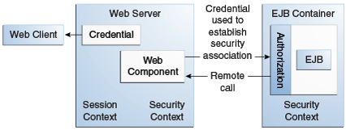

Descripción General de la Seguridad de Java EE
Toda empresa que tenga recursos confidenciales a los que puedan acceder muchos usuarios o recursos que atraviesen redes abiertas y sin protección, como Internet, necesita protección.
Las aplicaciones de nivel empresarial y de nivel web se componen de componentes que se implementan en varios contenedores. Estos componentes se combinan para crear una aplicación empresarial de varios niveles. La seguridad de los componentes la proporcionan sus contenedores. Un contenedor proporciona dos tipos de seguridad: declarativa y programática.
-
La seguridad declarativa expresa los requisitos de seguridad de un componente de aplicación mediante descriptores de implementación o anotaciones.
Un descriptor de implementación es un archivo XML que es externo a la aplicación y que expresa la estructura de seguridad de una aplicación, incluidos los roles de seguridad, el control de acceso y los requisitos de autenticación. Para obtener más información acerca de los descriptores de implementación, lea Uso de Descriptores de Implementación para Seguridad Declarativa .
Las anotaciones, también denominadas metadatos, se utilizan para especificar información sobre seguridad dentro de un archivo de clase. Cuando se implementa la aplicación, el descriptor de implementación de la aplicación puede utilizar o anular esta información. Las anotaciones le evitan tener que escribir información declarativa dentro de los descriptores XML. En su lugar, simplemente coloca anotaciones en el código y se genera la información requerida. Para este tutorial, las anotaciones se utilizan para proteger las aplicaciones siempre que sea posible. Para obtener más información acerca de las anotaciones, consulte Uso de anotaciones para especificar información de seguridad .
-
La seguridad programática está integrada en una aplicación y se utiliza para tomar decisiones de seguridad. La seguridad programática es útil cuando la seguridad declarativa por sí sola no es suficiente para expresar el modelo de seguridad de una aplicación. Para obtener más información sobre seguridad programática, lea Uso de Seguridad Programática.
Se puede encontrar más información sobre estos conceptos y mecanismos en el capítulo sobre seguridad en la especificación Java EE 8.
Otros capítulos de esta parte analizan los requisitos de seguridad en las aplicaciones de nivel web y de nivel empresarial.
-
Capítulo 51, "Introducción a la Protección de Aplicaciones Web" explica cómo agregar seguridad a los componentes web, como los servlets.
-
Capítulo 52, "Introducción a la Protección de Aplicaciones Empresariales" explica cómo agregar seguridad a los componentes de Java EE, como Enterprise Beans y clientes de aplicaciones.
Un Sencillo Tutorial de Seguridad de Aplicaciones
El comportamiento de seguridad de un entorno Java EE se puede comprender mejor si se examina lo que sucede en una aplicación simple con un cliente web, una interfaz de usuario y una lógica de negocios empresarial.
En el siguiente ejemplo, que se toma de la especificación Java EE, el cliente web se basa en el servidor web para que actúe como su proxy de autenticación mediante la recopilación de datos de autenticación del usuario del cliente y su uso para establecer una sesión autenticada.
Paso 1: Solicitud Inicial
En el primer paso de este ejemplo, el cliente web solicita la URL de la aplicación principal. Esta acción se muestra en la Figura 50-1.
Dado que el cliente aún no se ha autenticado en el entorno de la aplicación, el servidor responsable de entregar la parte web de la aplicación, en lo sucesivo denominado servidor web, lo detecta e invoca el mecanismo de autenticación apropiado para este recurso. Para obtener más información sobre estos mecanismos, consulte Mecanismos de Seguridad.
Paso 2: Autenticación Inicial
El servidor web devuelve un formulario que el cliente web utiliza para recopilar datos de autenticación, como el nombre de usuario y la contraseña, del usuario. El cliente web envía los datos de autenticación al servidor web, donde el servidor web los valida, como se muestra en la Figura 50-2. El mecanismo de validación puede ser local para un servidor o puede aprovechar los servicios de seguridad subyacentes. Sobre la base de la validación, el servidor web establece una credencial para el usuario.

Paso 3: Autorización de URL
La credencial se usa para determinaciones futuras de si el usuario está autorizado para acceder a los recursos restringidos que pueda solicitar. El servidor web consulta la política de seguridad asociada con el recurso web para determinar los roles de seguridad a los que se permite el acceso al recurso. La política de seguridad se deriva de las anotaciones o del descriptor de implementación. Luego, el contenedor web prueba la credencial del usuario con cada función para determinar si puede asignar al usuario a la función. La Figura 50-3 muestra este proceso.

La evaluación del servidor web se detiene con un resultado "está autorizado" cuando el servidor web puede asignar al usuario a un rol. Se llega a un resultado "no autorizado" si el servidor web no puede asignar al usuario a ninguno de los roles permitidos.
Paso 4: Cumplimiento de la Solicitud Original
Si el usuario está autorizado, el servidor web devuelve el resultado de la solicitud de URL original, como se muestra en la Figura 50-4.

En nuestro ejemplo, se devuelve la URL de respuesta de una página web, lo que permite al usuario publicar datos de formulario que deben ser manejados por el componente de lógica empresarial de la aplicación. Consulte el Capítulo 51, "Introducción a la Protección de Aplicaciones Web" para obtener más información sobre la protección de aplicaciones web.
Paso 5: Invocación de Métodos de Negocio de Enterprise Bean
La página web realiza la llamada de método remoto al bean empresarial, utilizando la credencial del usuario para establecer una asociación segura entre la página web y el bean empresarial, como se muestra en la Figura 50-5. La asociación se implementa como dos contextos de seguridad relacionados: uno en el servidor web y otro en el contenedor EJB.

El contenedor EJB es responsable de hacer cumplir el control de acceso en el método de bean empresarial. El contenedor consulta la política de seguridad asociada con el bean empresarial para determinar los roles de seguridad a los que se permite el acceso al método. La política de seguridad se deriva de las anotaciones o del descriptor de implementación. Para cada función, el contenedor de EJB determina si puede correlacionar la persona que llama con la función utilizando el contexto de seguridad asociado con la llamada.
La evaluación del contenedor se detiene con un resultado "está autorizado" cuando el contenedor puede asignar la credencial de la persona que llama a un rol. Se alcanza un resultado "no autorizado" si el contenedor no puede asignar a la persona que llama a ninguno de los roles permitidos. Un resultado "no autorizado" hace que el contenedor genere una excepción y la propague a la página web que realiza la llamada.
Si se autoriza la llamada, el contenedor despacha el control al método del bean empresarial. El servidor web y el cliente web devuelven el resultado de la ejecución de la llamada del bean a la página web y, en última instancia, al usuario.
Características de un Mecanismo de Seguridad
Un mecanismo de seguridad correctamente implementado proporcionará la siguiente funcionalidad:
-
Evitar el acceso no autorizado a las funciones de la aplicación y los datos comerciales o personales (autenticación)
-
Responsabilizar a los usuarios del sistema por las operaciones que realizan (no repudio)
-
Proteja un sistema de interrupciones del servicio y otras infracciones que afectan la calidad del servicio
Idealmente, los mecanismos de seguridad debidamente implementados también serán
-
Fácil de administrar
-
Transparente para los usuarios del sistema.
-
Interoperable a través de los límites de la aplicación y la empresa
Características de la Seguridad de las Aplicaciones
Las aplicaciones Java EE constan de componentes que pueden contener recursos tanto protegidos como no protegidos. A menudo, debe proteger los recursos para asegurarse de que solo los usuarios autorizados tengan acceso. La autorización proporciona acceso controlado a los recursos protegidos. La autorización se basa en la identificación y autenticación. La identificación es un proceso que permite el reconocimiento de una entidad por parte de un sistema, y la autenticación es un proceso que verifica la identidad de un usuario, dispositivo u otra entidad en un sistema informático, normalmente como requisito previo para permitir el acceso a los recursos de un sistema.
No se requiere autorización ni autenticación para que una entidad acceda a recursos no protegidos. El acceso a un recurso sin autenticación se denomina acceso no autenticado o anónimo.
Las características de la seguridad de las aplicaciones que, cuando se abordan adecuadamente, ayudan a minimizar las amenazas de seguridad que enfrenta una empresa incluyen las siguientes.
-
Autenticación: el medio por el cual las entidades comunicantes, como el cliente y el servidor, se prueban entre sí que actúan en nombre de identidades específicas que están autorizadas para el acceso. Esto asegura que los usuarios sean quienes dicen ser.
-
Autorización o control de acceso: los medios por los cuales las interacciones con los recursos se limitan a colecciones de usuarios o programas con el fin de hacer cumplir las restricciones de integridad, confidencialidad o disponibilidad. Esto garantiza que los usuarios tengan permiso para realizar operaciones o acceder a los datos.
-
Integridad de los datos: El medio utilizado para probar que la información no ha sido modificada por un tercero, una entidad distinta a la fuente de la información. Por ejemplo, un destinatario de datos enviados a través de una red abierta debe poder detectar y descartar mensajes que se modificaron después de que se enviaron. Esto asegura que solo los usuarios autorizados puedan modificar los datos.
-
Confidencialidad o privacidad de datos: Los medios utilizados para garantizar que la información esté disponible solo para los usuarios autorizados para acceder a ella. Esto garantiza que solo los usuarios autorizados puedan ver los datos confidenciales.
-
No repudio: El medio utilizado para probar que un usuario que realizó alguna acción no puede razonablemente negar haberla realizado. Esto asegura que se pueda probar que las transacciones han ocurrido.
-
Calidad de servicio: los medios utilizados para brindar un mejor servicio al tráfico de red seleccionado a través de diversas tecnologías.
-
Auditoría: Los medios utilizados para capturar un registro resistente a la manipulación de eventos relacionados con la seguridad con el fin de poder evaluar la eficacia de las políticas y mecanismos de seguridad. Para habilitar esto, el sistema mantiene un registro de transacciones e información de seguridad.